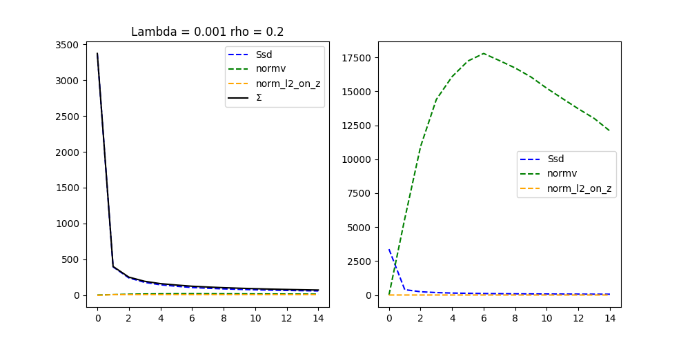
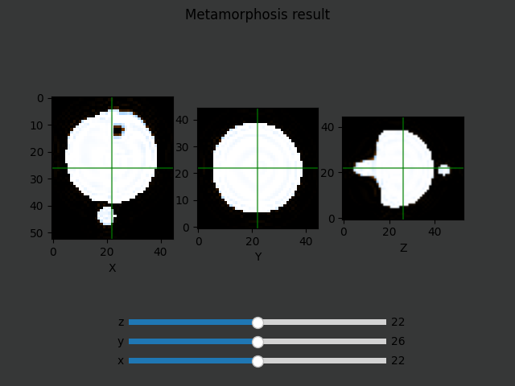
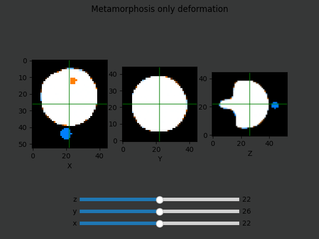

Note
Go to the end to download the full example code.
Metamorphosis on 3D images
In this file we apply the metamorphosis algorithm to 3D images.
Import necessary libraries
try:
import sys, os
# add the parent directory to the path
base_path = os.path.join(os.path.dirname(os.path.abspath(__file__)),'..')
sys.path.insert(0,base_path)
import __init__
except NameError:
pass
import torch
from demeter.constants import *
import demeter.metamorphosis as mt
import demeter.utils.image_3d_plotter as i3p
from demeter.utils import *
import demeter.utils.reproducing_kernels as rk
import demeter.utils.torchbox as tb
cuda = torch.cuda.is_available()
# cuda = True
device = 'cpu'
if cuda:
device = 'cuda:0'
print('device used :',device)
if device == 'cpu':
print('Warning : the computation will be slow, it is recommended to use a GPU')
/home/runner/work/Demeter_metamorphosis/Demeter_metamorphosis/src/demeter/utils/toolbox.py:270: SyntaxWarning: invalid escape sequence '\d'
os.system(f'convert -delay {delay} -loop 0 {folder}/{file_name}_\d{3}.png {folder}/{file_name}.gif')
/home/runner/work/Demeter_metamorphosis/Demeter_metamorphosis/src/demeter/utils/torchbox.py:930: SyntaxWarning: invalid escape sequence '\s'
"""
/opt/hostedtoolcache/Python/3.12.8/x64/lib/python3.12/site-packages/kornia/feature/lightglue.py:44: FutureWarning: `torch.cuda.amp.custom_fwd(args...)` is deprecated. Please use `torch.amp.custom_fwd(args..., device_type='cuda')` instead.
@torch.cuda.amp.custom_fwd(cast_inputs=torch.float32)
/home/runner/work/Demeter_metamorphosis/Demeter_metamorphosis/src/demeter/utils/vector_field_to_flow.py:15: SyntaxWarning: invalid escape sequence '\i'
"""
/home/runner/work/Demeter_metamorphosis/Demeter_metamorphosis/src/demeter/utils/vector_field_to_flow.py:186: SyntaxWarning: invalid escape sequence '\i'
"""
device used : cpu
Warning : the computation will be slow, it is recommended to use a GPU
Load the images and visualize them
path = ROOT_DIRECTORY+"/examples/im3Dbank/"
source_name = "ball_for_hanse"
target_name = "hanse_w_ball"
S = torch.load(path+source_name+".pt").to(device)
T = torch.load(path+target_name+".pt").to(device)
# if the image is too big for your GPU, you can downsample it quite barbarically :
step = 2 if device == 'cuda:0' else 3
if step > 0:
S = S[:,:,::step,::step,::step]
T = T[:,:,::step,::step,::step]
_,_,D,H,W = S.shape
st = tb.imCmp(S,T,method = 'compose')
sl = i3p.imshow_3d_slider(st, title = 'Source (orange) and Target (blue)')
plt.show()
## Setting residuals to 0 is equivalent to writing the
## following line of code :
# residuals= torch.zeros((D,H,W),device = device)
# residuals.requires_grad = True
momentum_ini = 0
# reg_grid = tb.make_regular_grid(S.size(),device=device)
/home/runner/work/Demeter_metamorphosis/Demeter_metamorphosis/examples/1_registration/metamorphosis_3D.py:45: FutureWarning: You are using `torch.load` with `weights_only=False` (the current default value), which uses the default pickle module implicitly. It is possible to construct malicious pickle data which will execute arbitrary code during unpickling (See https://github.com/pytorch/pytorch/blob/main/SECURITY.md#untrusted-models for more details). In a future release, the default value for `weights_only` will be flipped to `True`. This limits the functions that could be executed during unpickling. Arbitrary objects will no longer be allowed to be loaded via this mode unless they are explicitly allowlisted by the user via `torch.serialization.add_safe_globals`. We recommend you start setting `weights_only=True` for any use case where you don't have full control of the loaded file. Please open an issue on GitHub for any issues related to this experimental feature.
S = torch.load(path+source_name+".pt").to(device)
/home/runner/work/Demeter_metamorphosis/Demeter_metamorphosis/examples/1_registration/metamorphosis_3D.py:46: FutureWarning: You are using `torch.load` with `weights_only=False` (the current default value), which uses the default pickle module implicitly. It is possible to construct malicious pickle data which will execute arbitrary code during unpickling (See https://github.com/pytorch/pytorch/blob/main/SECURITY.md#untrusted-models for more details). In a future release, the default value for `weights_only` will be flipped to `True`. This limits the functions that could be executed during unpickling. Arbitrary objects will no longer be allowed to be loaded via this mode unless they are explicitly allowlisted by the user via `torch.serialization.add_safe_globals`. We recommend you start setting `weights_only=True` for any use case where you don't have full control of the loaded file. Please open an issue on GitHub for any issues related to this experimental feature.
T = torch.load(path+target_name+".pt").to(device)
ic| image_3d_plotter.py:508 in imshow_3d_slider()
image.shape: (45, 53, 45, 4)
Inititialize a kernel Operator
kernelOp = rk.GaussianRKHS((4,4,4), normalized= True)
LDDMM
# mu = 0
# mu,rho,lamb = 0, 0, .0001 # LDDMM
# print("\nApply LDDMM")
# mr_lddmm = mt.lddmm(S,T,momentum_ini,
# kernelOperator=kernelOp, # Kernel
# cost_cst=0.001, # Regularization parameter
# integration_steps=10, # Number of integration steps
# n_iter=4, # Number of optimization steps
# grad_coef=1, # max Gradient coefficient
# data_term=None, # Data term (default Ssd)
# safe_mode = False, # Safe mode toggle (does not crash when nan values are encountered)
# integration_method='semiLagrangian', # You should not use Eulerian for real usage
# )
# mr_lddmm.plot_cost()
#
# mr_lddmm.save("ballforhance_LDDMM",light_save= True)
# mr_lddmm.to_device('cpu')
# deformation = mr_lddmm.mp.get_deformation()
# # # you can save the optimization:
# # # mr_lddmm.save(source_name,target_name)
#
# image_to_target = tb.imCmp(mr_lddmm.mp.image.cpu(),T,method = 'compose')
# sl = i3p.imshow_3d_slider(image_to_target, title = 'LDDMM result')
# plt.show()
# visualization tools with issues,TO FIX !
# i3p.Visualize_geodesicOptim(mr_lddmm,alpha=1)
# plt_v = i3p.compare_3D_images_vedo(T.cpu(),mr_lddmm.mp.image_stock.cpu())
# plt_v.show_deformation_flow(deformation,1,step=3)
# plt_v.plotter.show(interactive=True).close()
Metamorphosis rho = 0 Pure photometric registration rho = 1 Pure geometric registration
rho = 0.2
dx_convention = 'square'
# # print("\nApply Metamorphosis")
print("\nApply Metamorphosis")
mr_meta = mt.metamorphosis(S, T, momentum_ini,
rho=rho, # ratio deformation / intensity addition
kernelOperator=kernelOp, # Kernel
cost_cst=0.001, # Regularization parameter
integration_steps=10, # Number of integration steps
n_iter=15, # Number of optimization steps
grad_coef=1, # max Gradient coefficient
data_term=None, # Data term (default Ssd)
safe_mode = False, # Safe mode toggle (does not crash when nan values are encountered)
integration_method='semiLagrangian', # You should not use Eulerian for real usage
dx_convention=dx_convention
)
mr_meta.plot_cost()
mr_meta.save(f"{source_name}_{target_name}_Metamorphosis")
image_to_target = tb.imCmp(mr_meta.mp.image.cpu(),T,method = 'compose')
sl = i3p.imshow_3d_slider(image_to_target, title = 'Metamorphosis result')
image_deformed = tb.imgDeform(S.cpu(),mr_meta.mp.get_deformator(),dx_convention=dx_convention)
imdef_target = tb.imCmp(image_deformed,T,method = 'compose')
sl = i3p.imshow_3d_slider(imdef_target, title = 'Metamorphosis only deformation')
ic(mr_meta.mp.image_stock.shape)
# sl = i3p.imshow_3d_slider(mr_meta.mp.image_stock, title = 'Metamorphosis evolution')
plt.show()
#
# # you can get the deformation grid:
# deformation = mr_meta.mp.get_deformation()
# We provide some visualisation tools :
# i3v.Visualize_geodesicOptim(mr_meta,alpha=1)
# plt_v = i3p.compare_3D_images_vedo(T,mr_meta.mp.image_stock.cpu())
# plt_v.show_deformation_flow(deformation,1,step=3)
# plt_v.plotter.show(interactive=True).close()
- 
- 
- 
Apply Metamorphosis
Progress: [#---------] 13.33% (Ssd : ,392.0854).
Progress: [##--------] 20.00% (Ssd : ,239.2672).
Progress: [###-------] 26.67% (Ssd : ,174.5768).
Progress: [###-------] 33.33% (Ssd : ,145.0005).
Progress: [####------] 40.00% (Ssd : ,121.1691).
Progress: [#####-----] 46.67% (Ssd : ,105.2254).
Progress: [#####-----] 53.33% (Ssd : , 93.8169).
Progress: [######----] 60.00% (Ssd : , 84.6231).
Progress: [#######---] 66.67% (Ssd : , 77.9193).
Progress: [#######---] 73.33% (Ssd : , 72.8133).
Progress: [########--] 80.00% (Ssd : , 68.1130).
Progress: [#########-] 86.67% (Ssd : , 64.1878).
Progress: [#########-] 93.33% (Ssd : , 60.5835).
Progress: [##########] 100.00% Done...
(Ssd : , 57.3564).
Computation of forward done in 0:03:00s and 0.190cents s
Computation of metamorphosis done in 0:03:00s and 0.191cents s
ic| abstract.py:1387 in save()
path: '/home/runner/work/Demeter_metamorphosis/Demeter_metamorphosis/saved_optim/'
Optimisation saved in /home/runner/work/Demeter_metamorphosis/Demeter_metamorphosis/saved_optim/3D_02_02_2025_ball_for_hanse_hanse_w_ball_Metamorphosis_000.pk1
ic| image_3d_plotter.py:508 in imshow_3d_slider()
image.shape: (45, 53, 45, 4)
Clipping input data to the valid range for imshow with RGB data ([0..1] for floats or [0..255] for integers). Got range [-0.15772485733032227..1.2322198152542114].
Clipping input data to the valid range for imshow with RGB data ([0..1] for floats or [0..255] for integers). Got range [-0.07220283150672913..1.224704384803772].
Clipping input data to the valid range for imshow with RGB data ([0..1] for floats or [0..255] for integers). Got range [-0.22403490543365479..1.1820396184921265].
ic| image_3d_plotter.py:508 in imshow_3d_slider()
image.shape: (45, 53, 45, 4)
Clipping input data to the valid range for imshow with RGB data ([0..1] for floats or [0..255] for integers). Got range [0.0..1.0000001192092896].
Clipping input data to the valid range for imshow with RGB data ([0..1] for floats or [0..255] for integers). Got range [0.0..1.0000001192092896].
Clipping input data to the valid range for imshow with RGB data ([0..1] for floats or [0..255] for integers). Got range [0.0..1.0000001192092896].
ic| metamorphosis_3D.py:140 in <module>
mr_meta.mp.image_stock.shape: torch.Size([10, 1, 45, 53, 45])
Total running time of the script: (3 minutes 3.755 seconds)